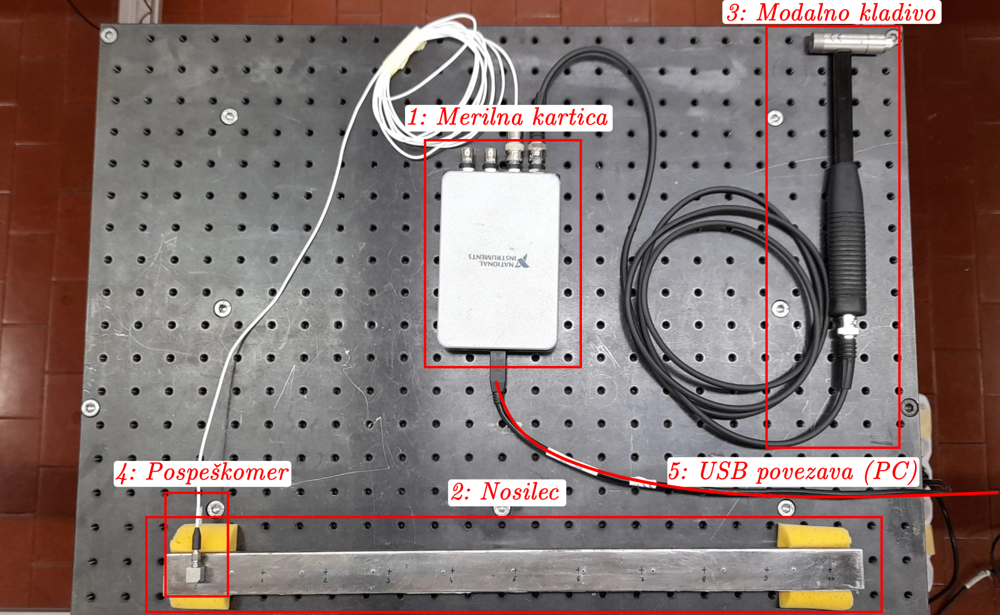
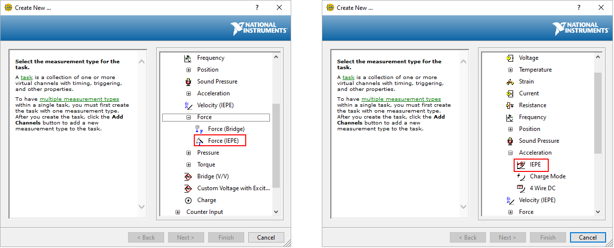
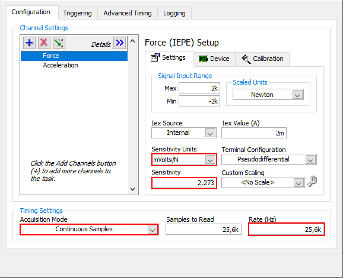
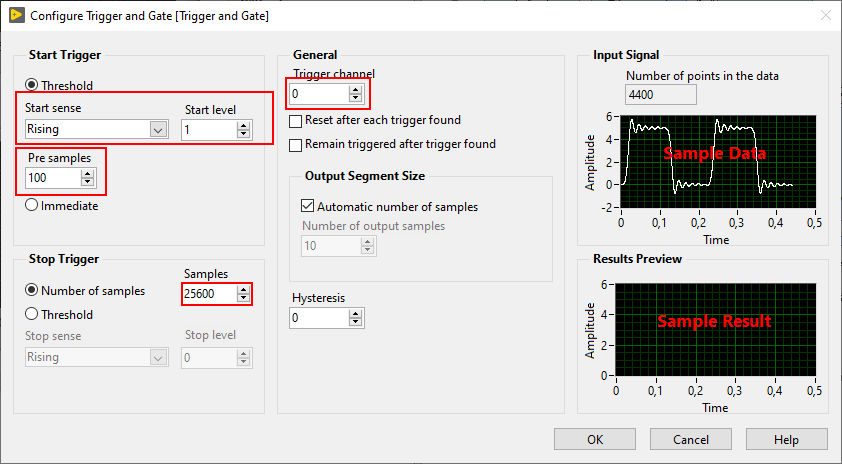
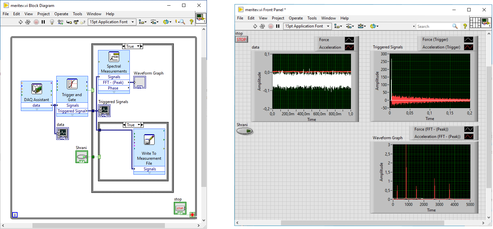
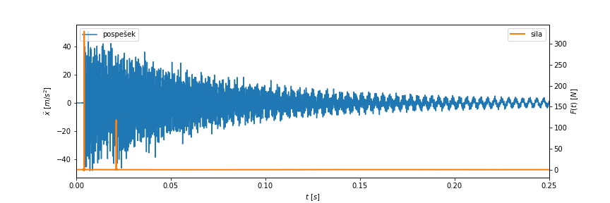

Show code cell source
import numpy as np
from scipy import signal
import matplotlib.pyplot as plt
5. Linearni, časovno invariatni (LTI) sistemi - zajem signalov#
Odzivni model linarnih, časovno invariantnih (ang. Linear, Time-Invariant, LTI) sistemov okarakteriziramo s t. i. prenosnimi funkcijami, ki povezujejo signale odziva in vzbujanja sistema, v frekvenčni (frekvenčna prenosna funkcija, \(\alpha(\omega)\)) oz. časovni (impulzna prenosna funkcija, \(h(t)\)) domeni.
5.1. Domača naloga#
Domača naloga
V okolju Jupyter Notebook pripravite kratko poročilo (od 3 do 10 celic s kodo) z rezultati in kratkim komentarjem meritev, ki jih boste izvedli na vaji, v katerem naj bodo razvidni podatki naloge. Poročilo naj vsebuje tudi:
prikaz (časovne vrste ter amplitudne spektre) vseh meritev, ki ste jih opravili v skupini (pri vseh podanih točkah vzbujanja),
prikaz časovne vrste ter amplitudnega spektra vaše meritve (pri vzbujanju v točki, podani v podatkih naloge),
prikaz frekvenčne prenosne funkcije v vaši izmerjeni točki (\(i\)), ki jo ocenite z \(\alpha_i(\omega) = X_i(\omega) / F_i(\omega)\).
Poročilo oddajte v .pdf obliki (glejte navodila za oddajo domačih nalog).
Dodatek:
Na podlagi izvedene meritve določite tudi impulzno prenosno funkcijo \(h_i(t)\) nosilca pri vzbujanju v vaši točki (\(i\)).
Simulirajte in prikažite odziv nosilca \(x(t)\) na vzbujanje z naključnim signalom sile \(f_i(t)\). Naključni vzbujevalni signal pripravite po lastni presoji, na primer z uporabo modula
numpy.random.
Frekvenčna prenosna funkcija \(\alpha(\omega)\) torej predstavlja razmerje med (kompleksnimi) amplitudami harmonskega odziva in vzbujana opazovanega sistema:
Impulzna prenosna funkcija \(h(t)\) pa podaja odziv sistema na impulzno motnjo.
Odziv na poljubno vzbujanje (signal \(f(t)\)) določa naslednja zveza:
kjer \(*\) označuje konvolucijo.
Note
Impulzna prenosna funkcija in frekvenčna prenosna funkcija sta Fourierov par:
5.2. Zajem signalov za določitev prenosnih funkcij LTI sistema#
Pri eksperimentalni karakterizaciji LTI sistema torej določamo razmerje med odzivom sistema in znanim signlom vzbujanja, na podlagi izmerjenih signalov \(x(t)\), \(f(t)\).
Namen te vaje je spoznati laboratorijsko opremo in izvesti meritve signalov, potrebnih za določitev prenosnih funkcij mehanskega LTI sistema.
Naloga: Meritev prenosnih funkcij jeklenega nosilca
Pripravite zajemni sistem in opravite meritve odziva (pospeška) jeklenega nosilca na impulzno vzbujanje v različnih točkah. Vsak naj izvede meritev odziva (pospšeka) nosilca pri vzbujanju z modalnim kladivom v točki, podani v tabeli podatkov, ki jo najdete v e-učilnici.
Delo v laboratoriju bo potekalo skupinsko. Nalogo sestavljajo trije vsebinski deli, ki so podrobneje opisani spodaj:
Postavitev in povezava merilne opreme.
Priprava LabView programa za zajem signalov.
Meritev signalov vzbujevalne sile in odziva sistema pri impulznem vzbujanju v različnih točkah.
5.2.1. Merilni sistem#
Merilna veriga je sestavljena iz naslednjih komponent:
Merilna kartica NI 9234:
4 analogni vhodni kanali (BNC priključek).
\(\pm\) 5 V.
Frekvenca vzorčenja do 51200 Hz (dovoljene vrednosti: \(51200 / n\), \(n \in [1, 2, 3, \dots, 31]\)).
24-bitna ločljvost.
Jeklen nosilec:
Dolžina: 500 mm.
11 označenih merilnih mest (na pozicijah \([25, 475]\) mm, razmik \(45\) mm).
Meritev odziva na lokaciji \(0\), vzbujanje na lokacijah \(i \in [1, 2, \dots 10]\).
Modalno kladivo PCB TLD086C03:
IEPE silomer.
BNC povezava z analognim vhodom merilne kartice.
Merilno območje: \(\pm\) 2224 N.
Občutljivost: podatek na škatli instrumenta.
Pospeškomer PCB 333B30:
IEPE pospeškomer.
BNC povezava z analognim vhodom merilne kartice.
Merilno območje: \(\pm\) 490 \(m/s^2\).
Občutljivost: podatek na škatli instrumenta.
Merilni osebni računalnik (USB povezava).
1. Postavitev merilne verige
Povežite merilno verigo zajemnega sistema. Pomagajte si z zgornjim opisom meirlne opreme ter spodnjo sliko.
Pri povezavi merilnih zaznaval (pospeškomer, silomer) na merilno kartico lahko uporabite poljubne vhodne kanale. Poskrbite, da boste izbiro upoštevali pri nastavitvi LabView programa.

5.2.2. LabView program#
2. Priprava LabView programa
Pripravite LabView program za zajem signalov vzbujanja in odziva opazovanega nosilca.
Glavne nastavitve zajema so:
Frekvenca vzorčenja: 25600 Hz,
Dolžina zajetega signala po vsakem udarcu: 1 s (25600 točk),
Število predvzorcev (shranjenih pred detekcijo udarca): 100,
Shranjevanje datotek: oblika
.lvm, posamezen udarec v segmentu.
Program naj v zanki (do ročne prekinive):
Zajema signale pospeška in sile na ustreznih kanalih merilne kartice (
Express -> Input -> DAQ Assistant):nastavite zajem vzbujanja (“Force (IEPE)”) in odziva (“Acceleration IEPE”) na povezanih kanalih,

nastavite občutljivosti zaznaval in parametre zajema v skladu s podatki,

(zajete signale lahko sproti prikazujete (
Desni klik na signal -> Create Graph indicator)).
Proži shranjevanje in prikaz, ko je zaznan udarec (
Express -> Signal Manipulation -> Trigger and Gate):nastavite ustrezen nivo sile, ki predstavlja zazavo udarca,
nastavite ustrezni kanal sprožilca (“Trigger channel”),
nastavite predpisano število predvzorcev (“Pre samples”),
nastavite ustrezno število shranjenih vzorcev po zaznavi udarca (“Samples”).

Če je zaznan udarec (
Trigger and Gate: Data Available) zapiše nastavljeno število vzorcev iz sprožilca vlvmdatoteko:poskrbite, da bo vsaka ponovitev meritve prebrana kot posamezni segment datoteke (“Segment headers”).
(Po zaznanem udarcu lahko signal iz sprožilca prikažete na grafu.)
(Prikažete lahko tudi graf frekvenčnega spektra signala v sprožilcu (
Express -> Signal Analysis -> Spectral).)
Primer blokovnega diagrama in krmilne plošče zaključenega programa:

5.2.3. Meritev#
3. Izvedba meritve signalov
Pri ustrenzo pripravljenem LabView programu se zajem posameznega segmenta (udarca) sproži samodejno z uporabo sprožilca (Trigger and gate).
Pri izvajanju meritve poskrbite, da:
ste sistem vzbudili z udarcem na označenem mestu, v smeri normalno na zgornjo ploskev nosilca,
sila posameznega udarca ni previsoka (primerna sila udarca: \(~200\) N),
v zajetem segmentu ni večkratnih zadetkov (preverite, da je v signalu sprožilca en sam izrazit vrh sile).
